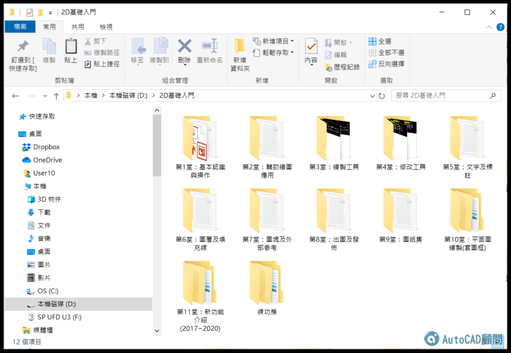

★注意：線上課程影片頻道綁定「GMAIL信箱」，透過電腦線上觀看影片時，必需要「登入GOOGLE帳戶」！
★費用：2D入門完整課程11堂課(附錄1,2) NT1500元。
★加入線上課程 👉 https://autocad-tw.1shop.tw/fwmimx 👈
☆教授軟體為AutoCAD 2020版本，使用2010至2023版本也可以（介面一樣），而且教授的標準流程觀念都是通用的，所以學習上不會有問題，這點請大家放心，參與練習過程中有任何疑慮，請回論壇主題中發表文章討論，讓你學習無後顧之憂！
版本：AutoCAD 2020
影片：中文影音教學
規格：共計11堂+附錄課程（課程800分鐘）
註1：附有DWG範例供操作練習，還有相關教學文件筆記。
註2：如遇播放問題，可改用「彈出式視窗」全螢幕觀看影片。

👇Google雲端觀看課程
https://drive.google.com/drive/folders/1HlqZxoPSPrpom7v9fBD77suOcHapash2

第1堂：基本認識與操作
範例1.檔案類型
範例2.版本類型
範例3.資料夾分類
範例4.基本操作
第2堂：輔助繪圖應用
範例1.正交與極座標
範例2.物件鎖點
範例3.極座標系統
範例4.查詢工具運用
第3堂：繪製工具
1.線_LINE及接合_JOIN
2.聚合線_PLINE及編輯PEDIT
3.建構線_XLINE
4.圓_CIRCLE
5.矩形_RECTANG
6.多邊形_POLYGON
7.弧_ARC
8.橢圓_ELLIPSE
9.等分_DIVIDE
10.等距_MEASURE
第4堂：修改工具
1.修剪_TRIM及延伸_EXTEND
2.圓角_FILLET及倒角_CHAMFER
3.複製_COPY及移動_MOVE
4.分解_EXPLODE
5.偏移複製_OFFSET
6.鏡射_MIRROR
7.陣列_ARRAY
8.旋轉_ROTATE
9.比例_SCALE
10.拉伸_STRETCH
第5堂：文字及標註
1.文字
2.標註
第6堂：圖層及填充線
1.圖層(LAYER)
2.線型管理員(LINETYPE)
3.清除圖層(PURGE)
4.填充線(HATCH)
第7堂：圖塊及外部參考
1.圖塊(BLOCK)
2.外部參考(XREF)
第8堂：出圖及發佈
1.模型空間出圖(MSPACE)
2.配置空間出圖(PSPACE)
3.發佈(PUBLISH)應用
第9堂：圖紙集
1.圖紙集說明
2.建立圖紙集(SHEETSET)
3.電子傳送 (ETRANSMIT)
第10堂：平面圖繪製(套圖框)
1.教室平面
2.家具配置平面
第11堂：新功能介紹(2017~2020)
AutoCAD 2017 新功能-匯入PDF
AutoCAD 2018 新功能-外部參考更新
AutoCAD 2019 新功能-圖面比較
AutoCAD 2020 新功能-快速測量
第11堂：新功能介紹(2011~2016)
AutoCAD 2011 新功能-物件隔離
AutoCAD 2012 新功能-路徑陣列
AutoCAD 2013 新功能-指令行
AutoCAD 2014 新功能-檔案頁籤
AutoCAD 2015 新功能-拖曳套索
AutoCAD 2016 新功能-修訂雲形線
附錄課程
附錄1.動態圖塊
附錄2.參數式製圖
https://www.autocad-tw.com/f72-forum
https://www.autocad-tw.com/t23024-topic
https://www.autocad-tw.com/t22774-topic